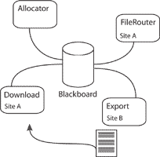

The PhEDEx project provides the data placement and the file transfer system for the CMS experiment. The project name is short for “Physics Experiment Data Export.”
 The PhEDEx components are:
- Transfer management database (TMDB), currently version is 2.
- Transfer agents that manage the movement of files between sites. This also includes agents to migrate files to mass storage, to manage local mass storage stager pools and stage in files efficiently based on transfer demand, and to calculate file checksums when necessary before transfers.
- Management agents, in particular the allocator agent which assigns files to destinations based on site data subscriptions, and agents to maintains file transfer topology routing information.
- Tools to manage transfer requests; CMS/RefDB/PubDB specific.
- Local agents for managing files locally, for instance as files arrive from a transfer request or a production farm, including any processing that needs to be done before they can be made available for transfer: massaging information, merging files, registering files into the catalogues, injecting into TMDB.
- Web monitoring tools.
If you have any questions or comments, please contact the developer list. You are welcome to file bug reports and support requests at our Savannah site.
News
- PhEDEx status report as of 2004-12-02.
- 16-17 September, 2004 PhEDEx hands-on workshop at CERN.